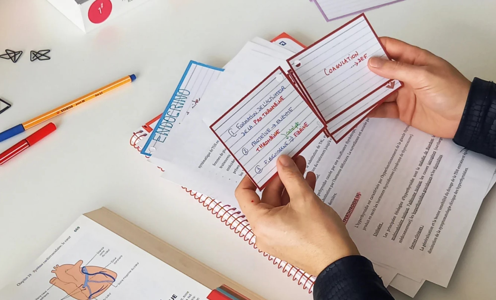

Projecte: Flashcards d'estudi
Objectiu
En aquest projecte creareu un programa d'estudi tipus Flashcards, una aplicació de consola capaç de gestionar col·leccions de targetes d’estudi dividides per temes. Cada tema es guardarà en un arxiu propi, i el programa permetrà afegir, eliminar, consultar i estudiar les targetes.
El projecte us permetrà practicar l’ús de llistes, diccionaris i fitxers externs, així com la gestió de menús, funcions i organització modular del codi.

Funcionalitats Principals
1. Menú Inicial
El vostre programa ha d’incloure un menú com aquest:
- 1. Escollir tema
- 2. Crear un nou tema
- 3. Eliminar un tema
- 4. Sortir
Quan l’usuari esculli un tema, el programa accedirà al menú de gestió de les flashcards d’aquell tema.
2. Menú del Tema Seleccionat
- 1. Afegir una nova flashcard
- 2. Mostrar totes les flashcards
- 3. Eliminar una flashcard
- 4. Mode estudi
- 5. Tornar al menú principal
3. Estructura de Dades
Cada Flashcard ha de ser un diccionari amb:
- Pregunta
- Resposta
Les flashcards d’un tema es guardaran dins d’una llista carregada des d’un arxiu CSV o TXT.
flashcards = []
Estructura Recomanada
Separeu les parts del vostre programa en funcions per mantenir el codi net i fàcil de modificar.
llistar_temes()– Mostra els arxius disponiblescrear_tema()– Genera un nou arxiuseleccionar_tema()– Tria un tema i el carregacarregar_flashcards()– Llegeix el CSV del temaguardar_flashcards()– Desa totes les flashcards al fitxerafegir_flashcard()– Afegeix una nova targetamostrar_flashcards()– Mostra totes les targeteseliminar_flashcard()– Esborra per númeromode_estudi()– Mostra preguntes en ordre i compara amb la resposta de l'usuari
Pista: Com funciona os per gestionar temes?
Per mostrar els temes disponibles, el programa pot utilitzar el mòdul os, que permet llegir els arxius d'una carpeta. Per exemple:
import os
def llistar_temes():
arxius = os.listdir("data")
temes = []
for f in arxius:
if f.endswith(".csv"):
temes.append(f)(".csv")]
return temesAquesta funció llegeix tots els arxius de la carpeta data i filtra només els que acaben en .csv, que representen els temes.
Reptes Addicionals:
- Afegir un comptador d'encerts i errors.
- Investigueu com utilitzar el mòdul random per mostrar les flashcards en ordre aleatori.
- Busqueu com afegir colors a la consola utilitzant codis ANSI.